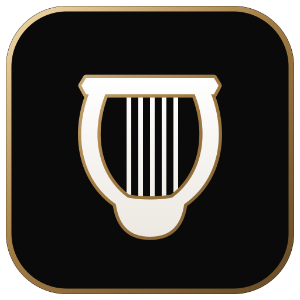

LyrenneYouTube Music for iPad
A YouTube Music player built for the iPad's big screen: browsing on the left, now playing and synced lyrics on the right. Keeps playing in the background and on the lock screen. Free, open source, no ads.
Download the .ipaWhat It Is
Lyrenne for iPad is the iPad version of Lyrenne, the desktop YouTube Music player, rebuilt in SwiftUI for the iPad. It signs in to your own YouTube Music account and plays your real library.
It isn't on the App Store, so you sideload it: Sideloadly on a Windows PC installs it with a free Apple ID. No Mac and no paid developer account.
Features
Your real library
Sign in with Google, then your liked songs and playlists with Play, Shuffle and Download all. Home, search, artist and album pages too.
Synced lyrics
Tap a line to jump to it. Shift a song's timing, write or edit lyrics, and show how Japanese, Korean, Chinese or Cyrillic lyrics read under each line.
Keeps playing
Plays in the background and with the screen locked, with lock screen and Control Center controls and artwork.
Downloads
Keep songs for offline listening. They also show up in the Files app under On My iPad, Lyrenne.
Autoplay and queue
The queue tops itself up with YouTube Music's radio for the song playing. Play next, add to queue, shuffle and repeat.
Listen Together
Join a room started in the desktop or Android Lyrenne with its code, and the host's songs, pauses and seeks follow on the iPad.
Install
Using SideStore or AltStore? Add the source https://raw.githubusercontent.com/Doctordefector/Lyrenne-iPad/main/source.json and install Lyrenne from it; updates come through there too. Otherwise, download Lyrenne.ipa from the latest release and carry on below.
On a Windows PC, install iTunes (the non-Store version) and Sideloadly. Plug in the iPad, trust the computer, drag Lyrenne.ipa into Sideloadly, enter a free Apple ID and press Start.
On the iPad, go to Settings, General, VPN & Device Management and trust your Apple ID. On iPadOS 16 or newer, also turn on Settings, Privacy & Security, Developer Mode.
FAQ
Is there an ad-free YouTube Music app for iPad?
Lyrenne for iPad is a free, open source YouTube Music player for iPad that shows no ads of its own. It's sideloaded rather than on the App Store.
Do I need a Mac to install it?
No. Sideloadly on a Windows PC installs it with a free Apple ID. No Mac and no paid developer account.
Can I install it with SideStore or AltStore?
Yes. Add the source https://raw.githubusercontent.com/Doctordefector/Lyrenne-iPad/main/source.json in SideStore or AltStore and install Lyrenne from it. New versions show up there as updates.
Does it play in the background?
Yes. It keeps playing in the background and with the screen locked, with controls on the lock screen and in Control Center.
Why does it stop opening after a week?
Apps sideloaded with a free Apple ID expire after 7 days. Re-run Sideloadly, or let it refresh automatically over Wi-Fi.
Does it work on iPhone?
It's built for the iPad's split layout and only installs on iPad.